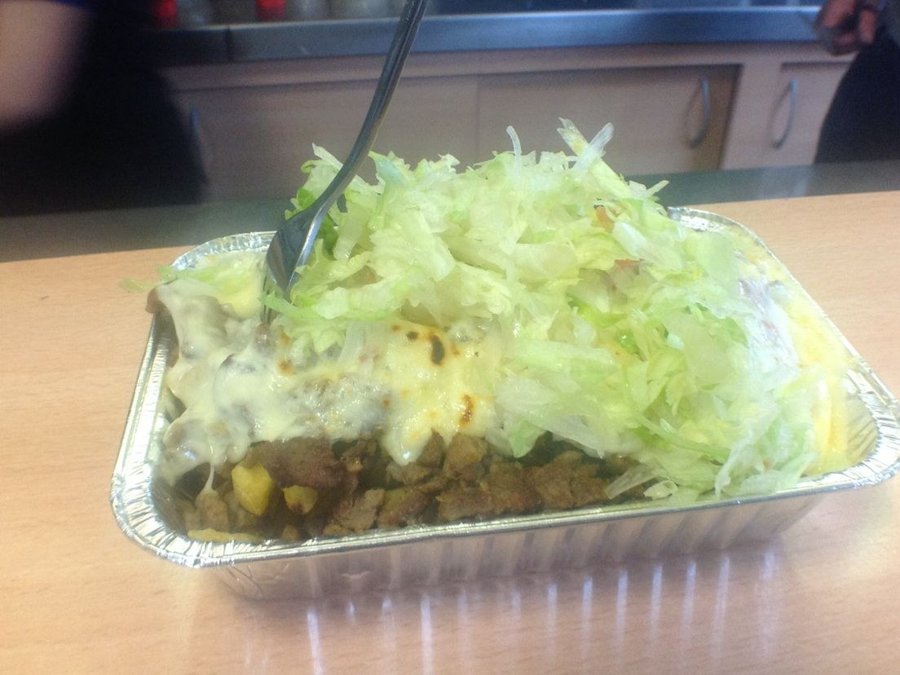
| 営業時間 | 毎日 12:00〜翌1:00（De Havenloods 2026年1月の記事による） |
|---|---|
| 定休日 | なし（記事上は毎日営業） |
| 住所 | Schiedamseweg 22, 3025 AB Rotterdam（郵便番号は未確認） |
| 予約 | 不要 |
| 乳児連れ | ベビーカー: 未確認 ／ ハイチェア: 未確認 ／ おむつ替え台: 未確認 |
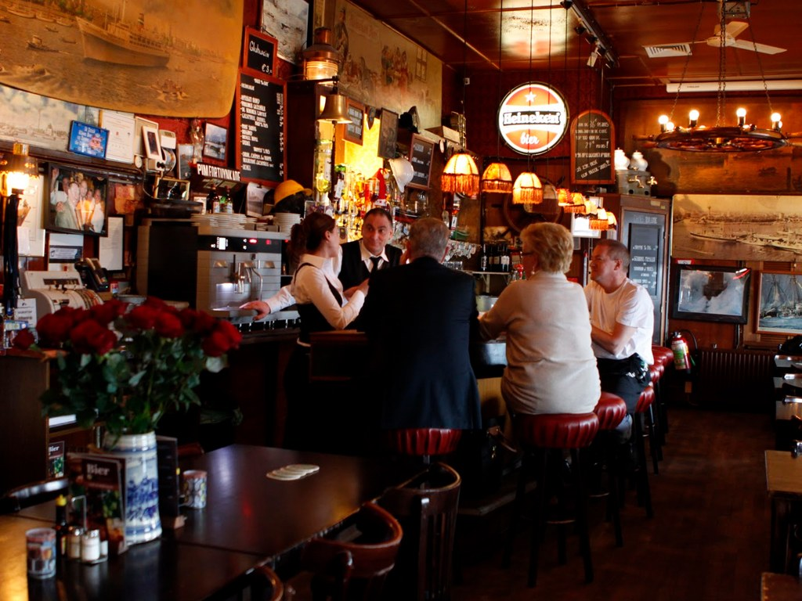
| 営業時間 | 月〜金 9:00〜23:00／土日 10:00〜23:00（キッチンは毎日 11:00〜21:00） |
|---|---|
| 定休日 | なし |
| 住所 | Parkkade 1, 3016 GN Rotterdam |
| 予約 | 可（公式サイトのフォーム。テラス席は予約不可） — ☎ +31 10 436 0462 ／ 公式サイト ／ 予約サイト |
| 乳児連れ | ベビーカー: 未確認 ／ ハイチェア: 未確認 ／ おむつ替え台: 未確認 |
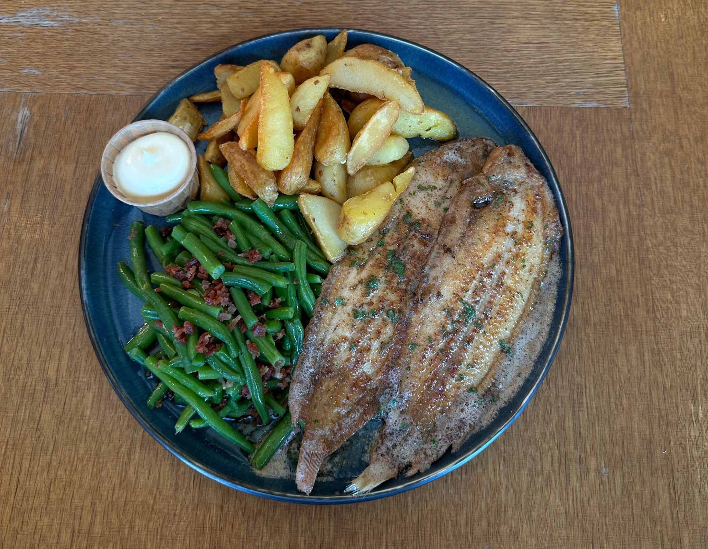
| 営業時間 | 月 15:00〜23:00／水・木 12:00〜翌1:00／金・土 12:00〜翌2:00／日 12:00〜23:00（ランチ 12:00〜16:00、夕食 17:00〜21:00） |
|---|---|
| 定休日 | 火曜 |
| 住所 | Havenstraat 11B, 3024 SE Rotterdam |
| 予約 | 推奨（電話予約） — ☎ +31 10 476 9190 ／ 公式サイト ／ 予約サイト |
| 乳児連れ | ベビーカー: 未確認 ／ ハイチェア: 未確認 ／ おむつ替え台: 未確認 |
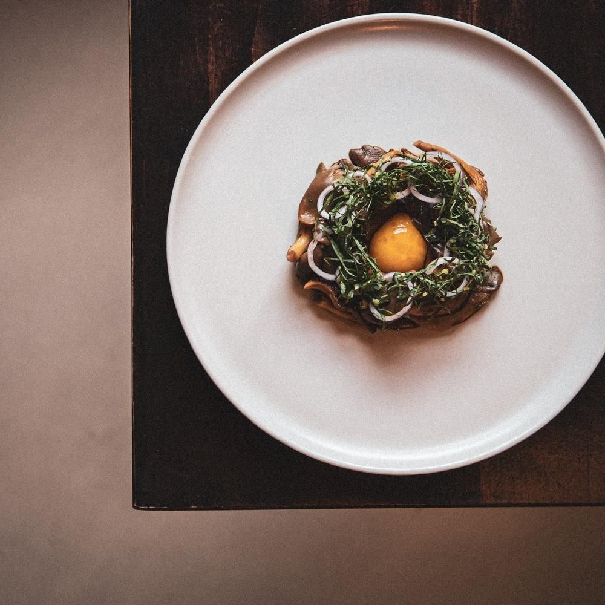
| 営業時間 | 火〜木 17:00〜23:00／金・土 16:00〜24:00 |
|---|---|
| 定休日 | 日・月 |
| 住所 | Goudsesingel 230, 3011 KE Rotterdam |
| 予約 | 推奨（オンライン予約） — ☎ +31 6 49397269 ／ 公式サイト |
| 乳児連れ | ベビーカー: 未確認 ／ ハイチェア: 未確認 ／ おむつ替え台: 未確認 |
| 営業時間 | 月〜金 16:00〜20:30（Wanderlog 表示）。日〜金 16:00〜21:00・土曜休とする情報もあり、要確認 |
|---|---|
| 定休日 | 土曜（日曜は情報が割れる・要確認） |
| 住所 | Mathenesserdijk 436A, 3026 GV Rotterdam |
| 予約 | 可（電話） — ☎ +31 10 425 4917 |
| 乳児連れ | ベビーカー: 未確認 ／ ハイチェア: 未確認 ／ おむつ替え台: 未確認 |
| 営業時間 | 火・水 18:00〜翌3:00／木 18:00〜翌4:00／金・土 18:00〜翌5:00（2025年8月の記事時点） |
|---|---|
| 定休日 | 日・月（記事の営業時間表記による） |
| 住所 | Kruiskade 28, Rotterdam（郵便番号は未確認） |
| 予約 | 不要 |
| 乳児連れ | ベビーカー: 未確認 ／ ハイチェア: 未確認 ／ おむつ替え台: 未確認 |
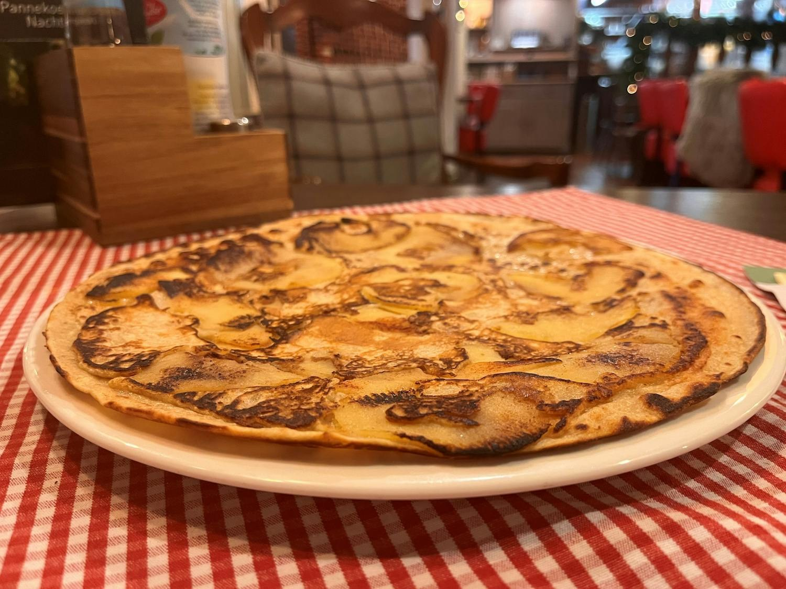
| 営業時間 | 月〜金 10:00〜20:00／土日 9:00〜20:00（キッチンは19:30まで・朝食メニューは12時まで） |
|---|---|
| 定休日 | なし（公式サイト上） |
| 住所 | Prinses Beatrixlaan 11, 3062 CM Rotterdam |
| 予約 | 可（電話） — ☎ +31 10 452 7361 ／ 公式サイト ／ 予約サイト |
| 乳児連れ | ベビーカー: 未確認 ／ ハイチェア: 未確認 ／ おむつ替え台: 未確認 |
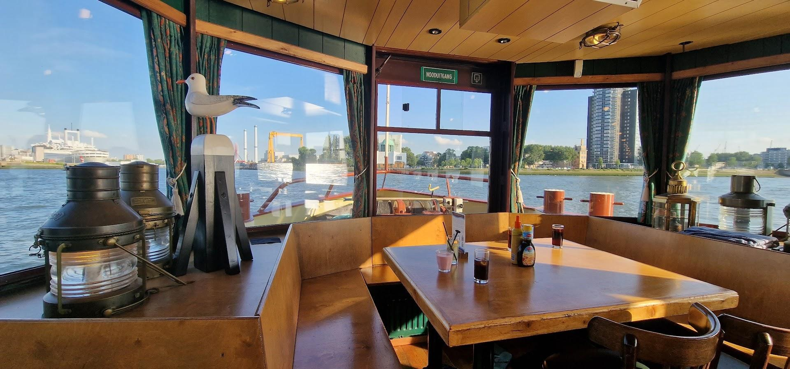
| 営業時間 | 出航時刻は日により異なる（1日数便・夕方便あり）。公式サイトのチケットページで要確認 |
|---|---|
| 定休日 | 未確認（出航日程による） |
| 住所 | Parkhaven 13, 3016 GM Rotterdam |
| 予約 | 推奨（オンラインでチケット購入） — ☎ +31 10 436 7295 ／ 公式サイト ／ 予約サイト |
| 乳児連れ | ベビーカー: 未確認 ／ ハイチェア: 未確認 ／ おむつ替え台: あり（上甲板の操舵室横に babyroom＝公式FAQ「Is er een babyroom aan boord? Ja」。おむつ替え台の有無そのものは未記載） (出典) |
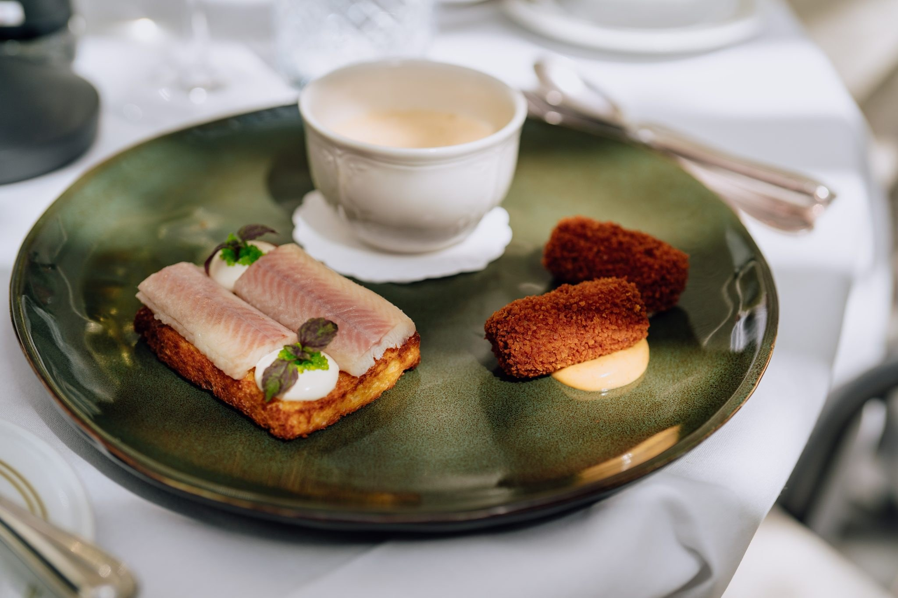
| 営業時間 | 火〜金 12:00〜22:00／土 18:00〜22:00（Verken Rotterdam 掲載） |
|---|---|
| 定休日 | 日・月 |
| 住所 | Rochussenstraat 20, 3015 EK Rotterdam |
| 予約 | 推奨 — ☎ +31 10 436 0344 ／ 公式サイト |
| 乳児連れ | ベビーカー: 未確認 ／ ハイチェア: 未確認 ／ おむつ替え台: 未確認 |
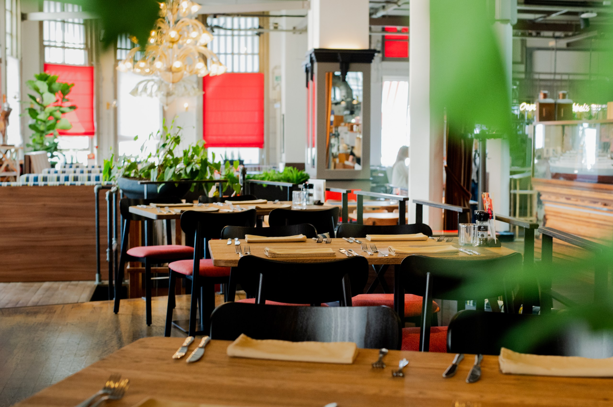
| 営業時間 | カフェ・レストラン 毎日 12:00〜22:00（朝食ビュッフェ 平日 7:00〜10:00／週末 8:00〜11:00、オイスターバー 12:00〜22:00） |
|---|---|
| 定休日 | なし |
| 住所 | Koninginnenhoofd 1, 3072 AD Rotterdam |
| 予約 | 推奨 — ☎ +31 10 439 0500 ／ 公式サイト ／ 予約サイト |
| 乳児連れ | ベビーカー: 未確認 ／ ハイチェア: 未確認 ／ おむつ替え台: 未確認 |
| 営業時間 | 月〜木・日 12:00〜翌1:00／金・土 12:00〜翌2:00（Verken Rotterdam 掲載。冬季は月・火の昼営業なし＝公式） |
|---|---|
| 定休日 | なし |
| 住所 | Havenstraat 7, 3024 SE Rotterdam |
| 予約 | 不要（大人数は要予約） — ☎ +31 10 477 3068 ／ 公式サイト |
| 乳児連れ | ベビーカー: 未確認 ／ ハイチェア: 未確認 ／ おむつ替え台: 未確認 |
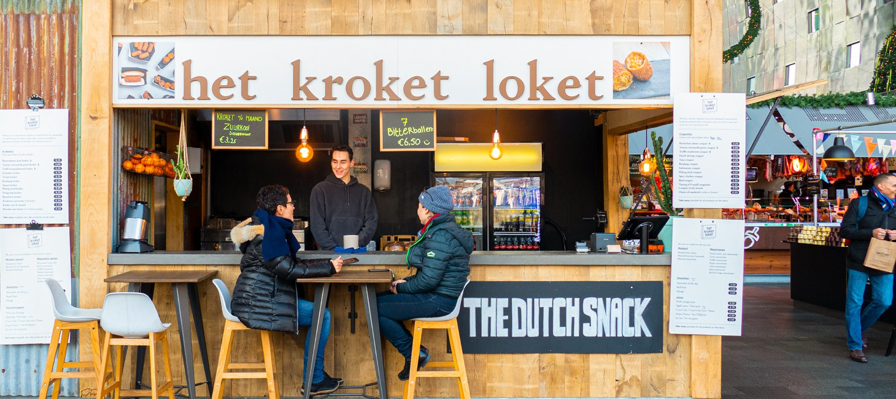
| 営業時間 | Markthal共通：月〜木 10:00〜20:00／金 10:00〜21:00／土 10:00〜20:00／日 12:00〜18:00（Markthal公式の店舗ページ記載。店により異なる場合あり） |
|---|---|
| 定休日 | なし（年中無休・祝日は要確認） |
| 住所 | Dominee Jan Scharpstraat 298 (Markthal, Unit 90), 3011 GZ Rotterdam |
| 予約 | 不要 — ☎ +31 6 4478 9870 ／ 公式サイト |
| 乳児連れ | ベビーカー: 可 ／ ハイチェア: 未確認 ／ おむつ替え台: あり (出典) |
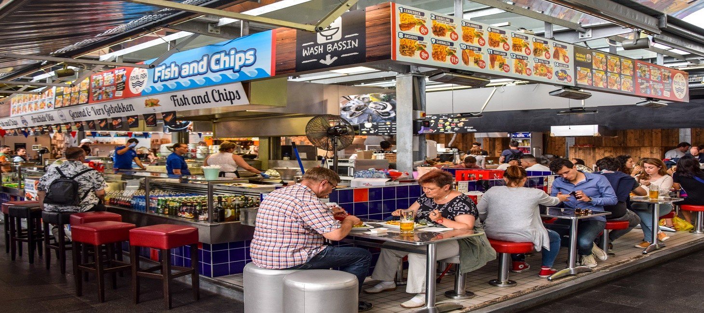
| 営業時間 | Markthal共通：月〜木 10:00〜20:00／金 10:00〜21:00／土 10:00〜20:00／日 12:00〜18:00（Markthal公式の店舗ページ記載。店により異なる場合あり） |
|---|---|
| 定休日 | なし（年中無休・祝日は要確認） |
| 住所 | Dominee Jan Scharpstraat 298 (Markthal, Unit 61-64), 3011 GZ Rotterdam |
| 予約 | 不要 — 公式サイト |
| 乳児連れ | ベビーカー: 可 ／ ハイチェア: 未確認 ／ おむつ替え台: あり (出典) |
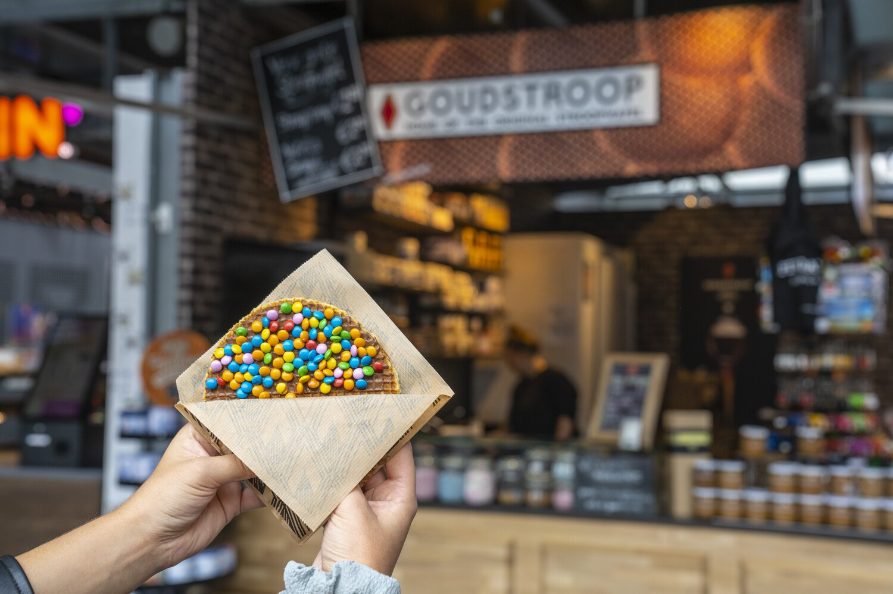
| 営業時間 | Markthal共通：月〜木 10:00〜20:00／金 10:00〜21:00／土 10:00〜20:00／日 12:00〜18:00（Markthal公式の店舗ページ記載。店により異なる場合あり） |
|---|---|
| 定休日 | なし（年中無休・祝日は要確認） |
| 住所 | Dominee Jan Scharpstraat 298 (Markthal, Unit 39), 3011 GZ Rotterdam |
| 予約 | 不要 — ☎ +31 6 3562 5114 ／ 公式サイト |
| 乳児連れ | ベビーカー: 可 ／ ハイチェア: 未確認 ／ おむつ替え台: あり (出典) |
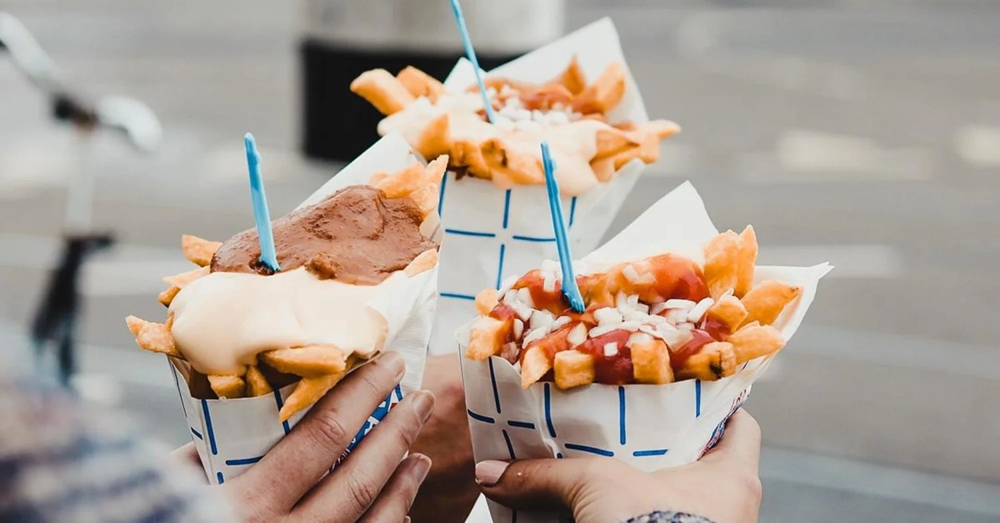
| 営業時間 | 月〜水 11:15〜18:30／木 11:30〜18:30／金 12:00〜20:30／土 11:15〜18:30／日 12:15〜18:30 |
|---|---|
| 定休日 | なし |
| 住所 | Binnenwegplein 24, 3012 KA Rotterdam |
| 予約 | 不要 — ☎ +31 10 414 6519 ／ 公式サイト |
| 乳児連れ | ベビーカー: 未確認 ／ ハイチェア: 未確認 ／ おむつ替え台: 未確認 |
| 営業時間 | 火〜金 8:00〜18:00／土 8:00〜16:00 |
|---|---|
| 定休日 | 日・月 |
| 住所 | Oudedijk 133, 3061 AA Rotterdam |
| 予約 | 不要 — ☎ +31 10 413 8173 ／ 公式サイト |
| 乳児連れ | ベビーカー: 未確認 ／ ハイチェア: 未確認 ／ おむつ替え台: 未確認 |
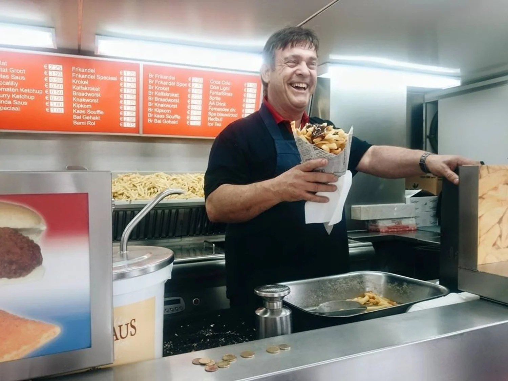
| 営業時間 | 未確認 |
|---|---|
| 定休日 | 未確認 |
| 住所 | Schouwburgplein（Karel Doormanstraat との角）, Rotterdam（番地なしのキオスク） |
| 予約 | 不要 |
| 乳児連れ | ベビーカー: 未確認 ／ ハイチェア: 未確認 ／ おむつ替え台: 未確認 |
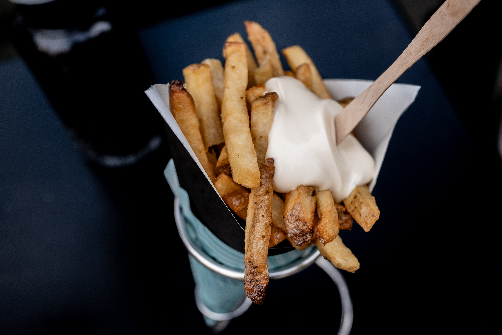
| 営業時間 | 未確認 |
|---|---|
| 定休日 | 未確認 |
| 住所 | Witte de Withstraat 68A, 3012 BS Rotterdam |
| 予約 | 不要 — 公式サイト |
| 乳児連れ | ベビーカー: 未確認 ／ ハイチェア: 未確認 ／ おむつ替え台: 未確認 |
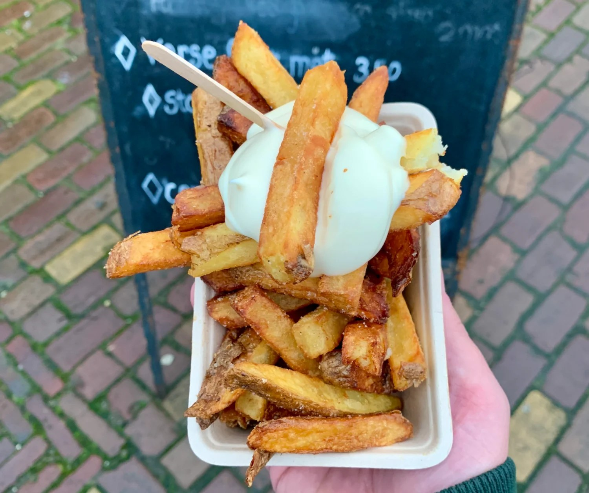
| 営業時間 | 土曜のみ（Oogstmarkt 10:00〜17:00。De Buik の市場特集による） |
|---|---|
| 定休日 | 日〜金 |
| 住所 | Noordplein（Rotterdamse Oogstmarkt 内）, Rotterdam-Noord |
| 予約 | 不要 |
| 乳児連れ | ベビーカー: 未確認 ／ ハイチェア: 未確認 ／ おむつ替え台: 未確認 |
| 営業時間 | 月〜木 11:00〜18:00／金 9:00〜18:00／土 9:00〜17:00／日 10:00〜17:00 |
|---|---|
| 定休日 | なし |
| 住所 | Matlingeweg 333, 3044 EV Rotterdam |
| 予約 | 不要 — 公式サイト |
| 乳児連れ | ベビーカー: 未確認 ／ ハイチェア: 未確認 ／ おむつ替え台: 未確認 |
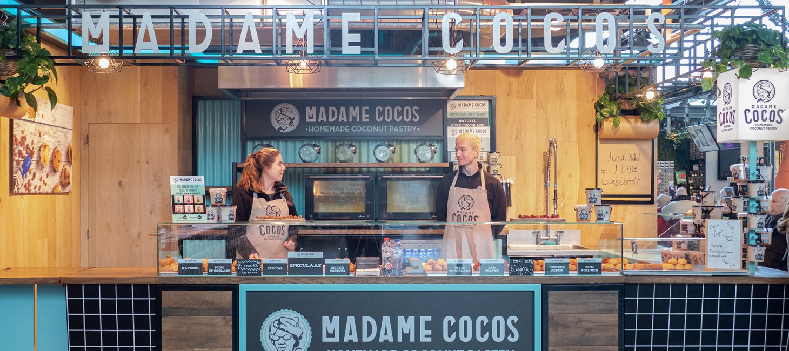
| 営業時間 | Markthal共通：月〜木 10:00〜20:00／金 10:00〜21:00／土 10:00〜20:00／日 12:00〜18:00（Markthal公式の店舗ページ記載。店により異なる場合あり） |
|---|---|
| 定休日 | なし（年中無休・祝日は要確認） |
| 住所 | Dominee Jan Scharpstraat 298 (Markthal, Unit 27), 3011 GZ Rotterdam |
| 予約 | 不要 — ☎ +31 6 2438 3744 ／ 公式サイト |
| 乳児連れ | ベビーカー: 可 ／ ハイチェア: 未確認 ／ おむつ替え台: あり (出典) |
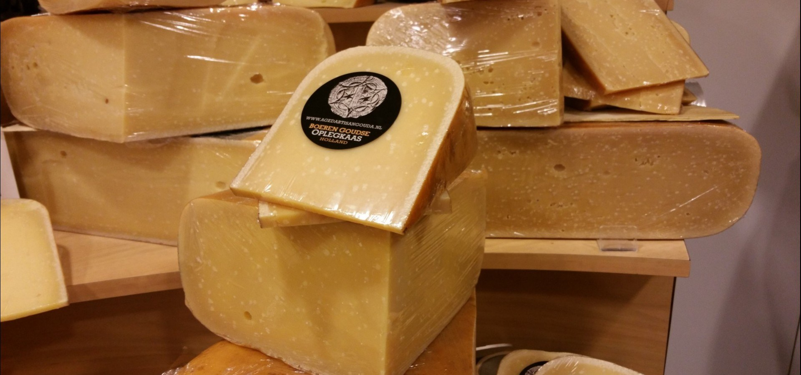
| 営業時間 | 火〜金 9:00〜18:00／土 9:00〜17:00／日 12:00〜17:00 |
|---|---|
| 定休日 | 月曜 |
| 住所 | Oude Binnenweg 129b, 3012 JD Rotterdam |
| 予約 | 不要 — ☎ +31 10 413 8644 ／ 公式サイト |
| 乳児連れ | ベビーカー: 未確認 ／ ハイチェア: 未確認 ／ おむつ替え台: 未確認 |
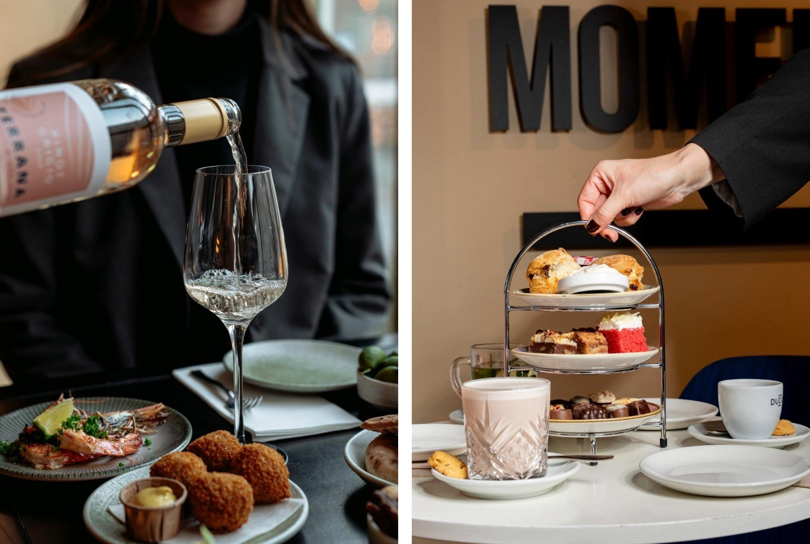
| 営業時間 | 毎日 9:00〜23:00（キッチン：日〜水 9:00〜18:00／木〜土 9:00〜20:00） |
|---|---|
| 定休日 | なし（無休） |
| 住所 | Meent 88, 3011 JP Rotterdam |
| 予約 | 可 — ☎ +31 10 433 3102 ／ 公式サイト |
| 乳児連れ | ベビーカー: 未確認 ／ ハイチェア: 未確認 ／ おむつ替え台: 未確認 |
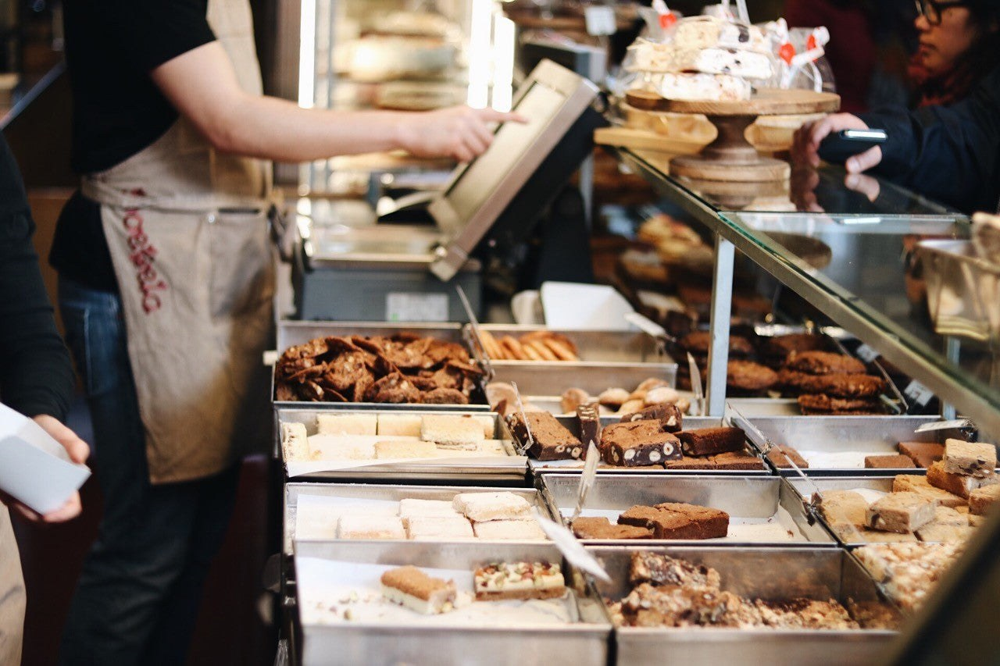
| 営業時間 | 月〜金 8:00〜18:00／土 8:30〜18:00／日 9:30〜17:00 |
|---|---|
| 定休日 | なし（毎日営業） |
| 住所 | Nieuwe Binnenweg 79A, 3014 GE Rotterdam |
| 予約 | 不要（ホールケーキは事前注文可） — ☎ +31 10 436 4774 ／ 公式サイト ／ 予約サイト |
| 乳児連れ | ベビーカー: 未確認 ／ ハイチェア: 未確認 ／ おむつ替え台: 未確認 |
| 営業時間 | 火〜土 9:00〜18:00 |
|---|---|
| 定休日 | 日・月 |
| 住所 | Voorburgstraat 217-219, 3037 ER Rotterdam |
| 予約 | 不要（ホールケーキ・行事用は事前注文） — ☎ +31 10 751 1380 ／ 公式サイト |
| 乳児連れ | ベビーカー: 未確認 ／ ハイチェア: 未確認 ／ おむつ替え台: 未確認 |
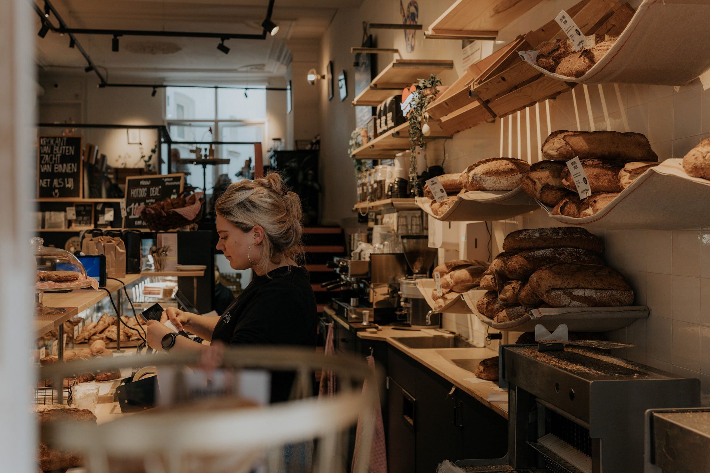
| 営業時間 | 月〜木 8:00〜16:00／金〜日 8:00〜18:00 |
|---|---|
| 定休日 | なし（毎日営業） |
| 住所 | Nieuwe Binnenweg 97a, 3014 GG Rotterdam |
| 予約 | 不要 — ☎ +31 10 225 0952 ／ 公式サイト |
| 乳児連れ | ベビーカー: 未確認 ／ ハイチェア: 未確認 ／ おむつ替え台: 未確認 |
| 営業時間 | 月〜日 7:00〜22:00（公式カフェページ。ホテル FAQ には「18時閉店」との記載もあり要確認） |
|---|---|
| 定休日 | なし |
| 住所 | Linker Rottekade 12, 3034 RD Rotterdam |
| 予約 | 不可 — ☎ +31 10 307 2855 ／ 公式サイト |
| 乳児連れ | ベビーカー: 未確認 ／ ハイチェア: 未確認 ／ おむつ替え台: 未確認 |
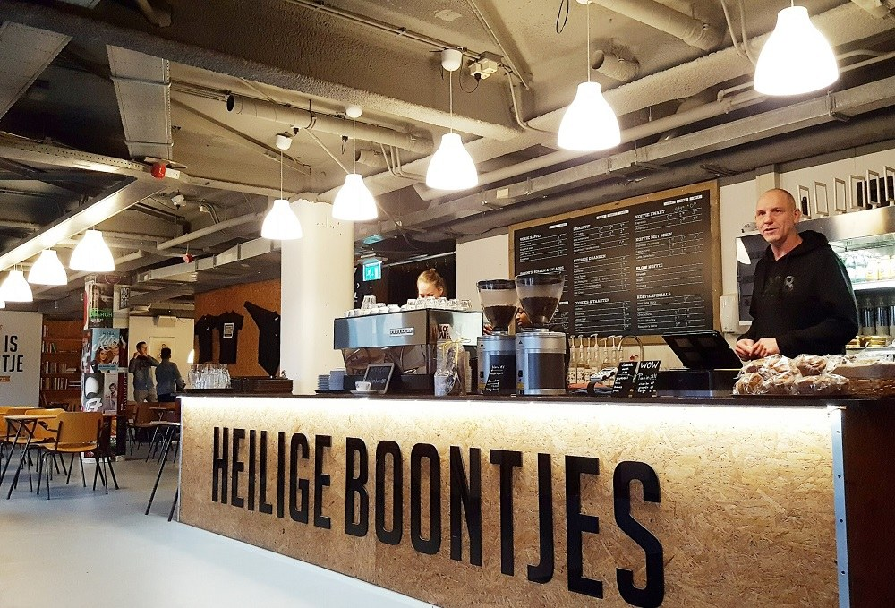
| 営業時間 | 月〜金 9:00〜18:00／土日 10:00〜18:00（キッチンは17時まで） |
|---|---|
| 定休日 | なし |
| 住所 | Eendrachtsplein 3, 3015 LA Rotterdam |
| 予約 | 未確認（会議室は予約制） — ☎ +31 10 840 1383 ／ 公式サイト |
| 乳児連れ | ベビーカー: 未確認 ／ ハイチェア: 未確認 ／ おむつ替え台: 未確認 |
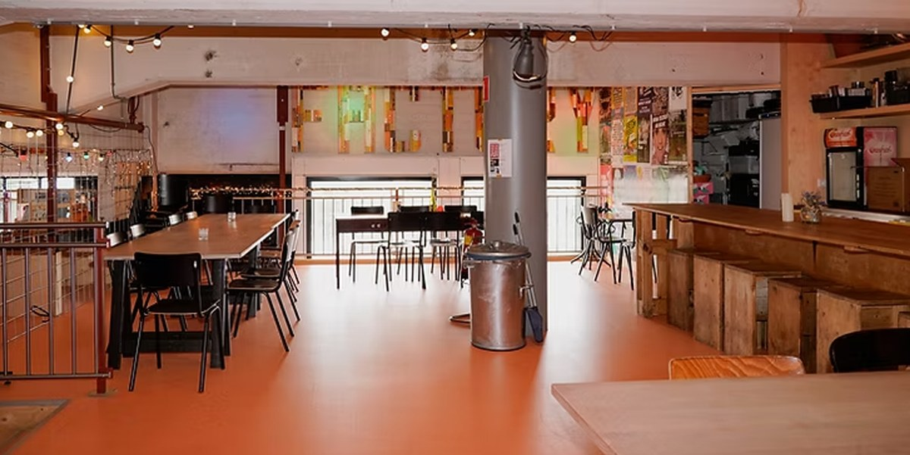
| 営業時間 | 火〜木 11:00〜22:00／金土 11:00〜23:00／日 11:00〜20:00 |
|---|---|
| 定休日 | 月曜 |
| 住所 | Nico Koomanskade 1025, 3072 LM Rotterdam |
| 予約 | 8人以上の団体のみ可（少人数は予約不要） — 公式サイト |
| 乳児連れ | ベビーカー: 未確認 ／ ハイチェア: 未確認 ／ おむつ替え台: 未確認 |
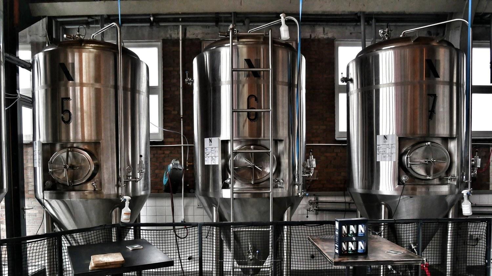
| 営業時間 | タップルーム：木 16:00〜23:00／金土 14:00〜23:00／日 14:00〜21:00（ビール販売店：月〜金 10:00〜17:00） |
|---|---|
| 定休日 | タップルームは月〜水 |
| 住所 | Zaagmolenkade 46, 3035 KA Rotterdam |
| 予約 | 可（予約ツールあり） — ☎ +31 10 223 0566 ／ 公式サイト ／ 予約サイト |
| 乳児連れ | ベビーカー: 未確認 ／ ハイチェア: 未確認 ／ おむつ替え台: 未確認 |
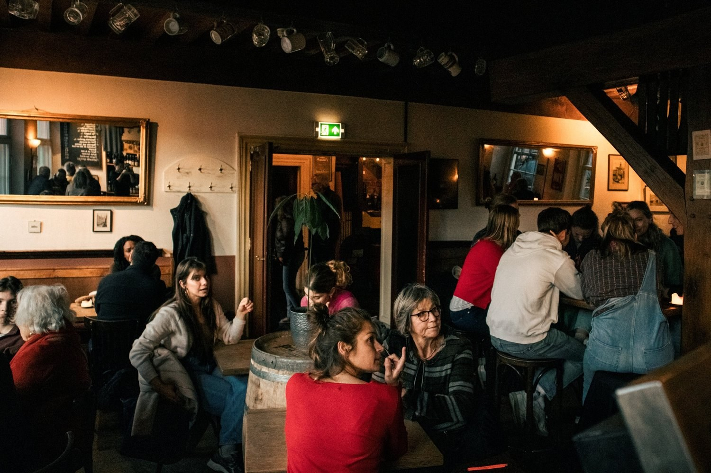
| 営業時間 | 水〜土 12:00〜24:00／日 12:00〜22:00 |
|---|---|
| 定休日 | 月・火 |
| 住所 | Aelbrechtskolk 12, 3024 RE Rotterdam |
| 予約 | 不可（団体はメールで相談） — ☎ +31 10 477 1189 ／ 公式サイト |
| 乳児連れ | ベビーカー: 未確認 ／ ハイチェア: 未確認 ／ おむつ替え台: 未確認 |
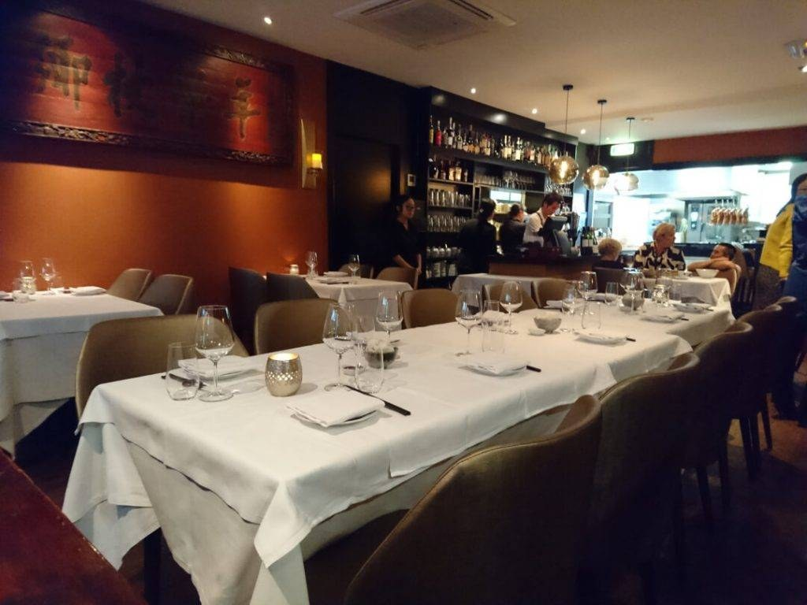
| 営業時間 | Google掲載: 月・火・木 17:00〜21:30／金土 12:00〜22:00／日 12:00〜21:00（Gault&Millau は火曜も休みと記載。要確認） |
|---|---|
| 定休日 | 水（火曜も休みの可能性あり） |
| 住所 | Westewagenstraat 74, 3011 AT Rotterdam |
| 予約 | 推奨 — ☎ +31 10 254 2071 ／ 公式サイト |
| 乳児連れ | ベビーカー: 未確認 ／ ハイチェア: 未確認 ／ おむつ替え台: 未確認 |
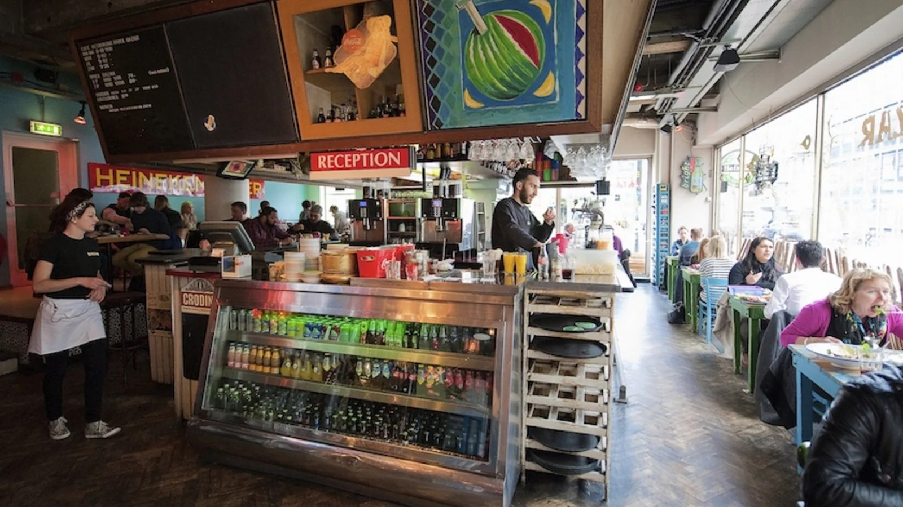
| 営業時間 | 月〜木・日 9:00〜22:30（L.O. 22:00）／金土 9:00〜24:00（L.O. 23:00） |
|---|---|
| 定休日 | なし（無休） |
| 住所 | Witte de Withstraat 16, 3012 BP Rotterdam |
| 予約 | 推奨（予約は公式のオンライン予約システムのみ） — ☎ +31 10 206 5151 ／ 公式サイト |
| 乳児連れ | ベビーカー: 未確認 ／ ハイチェア: あり（予約時に申し出） ／ おむつ替え台: 未確認 (出典) |
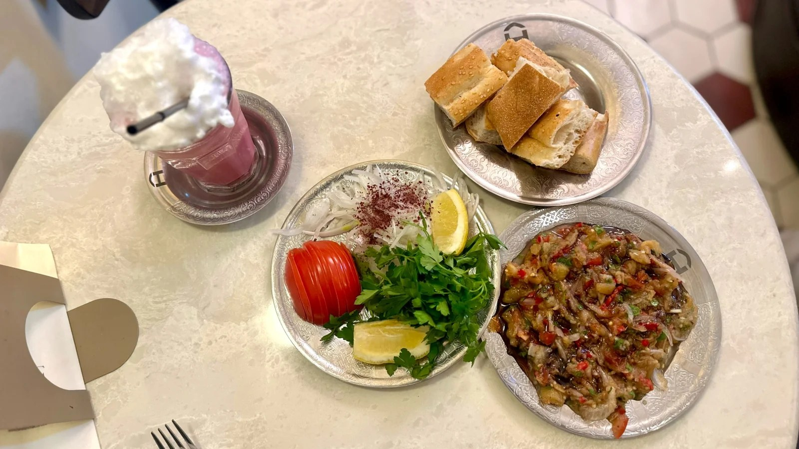
| 営業時間 | 火〜日 12:00〜21:00 |
|---|---|
| 定休日 | 月 |
| 住所 | Bloemfonteinstraat 78C, 3072 HK Rotterdam |
| 予約 | 不要 — ☎ +31 6 51885000 ／ 公式サイト |
| 乳児連れ | ベビーカー: 未確認 ／ ハイチェア: 未確認 ／ おむつ替え台: 未確認 |
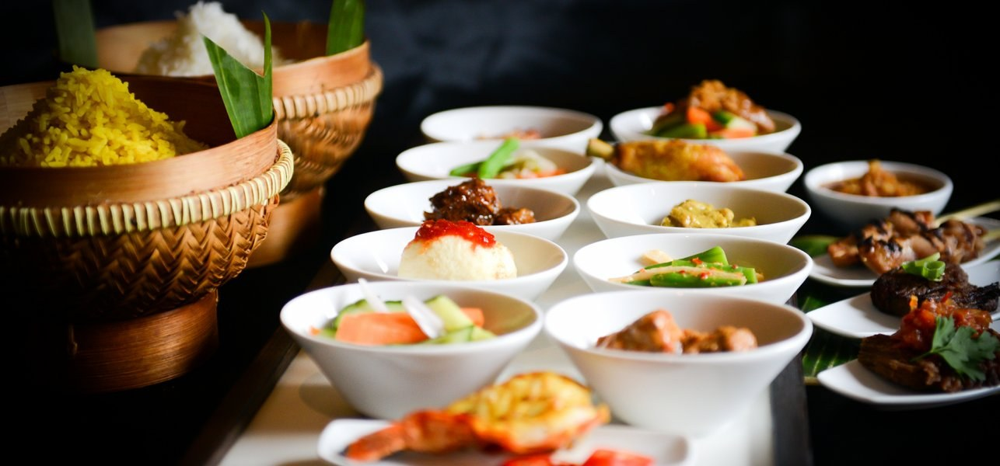
| 営業時間 | 火〜日 16:30〜22:00（ディナーのみ） |
|---|---|
| 定休日 | 月 |
| 住所 | Grindweg 650, 3055 VD Rotterdam |
| 予約 | 推奨 — ☎ +31 10 422 3625 ／ 公式サイト ／ 予約サイト |
| 乳児連れ | ベビーカー: 未確認 ／ ハイチェア: 未確認 ／ おむつ替え台: 未確認 |
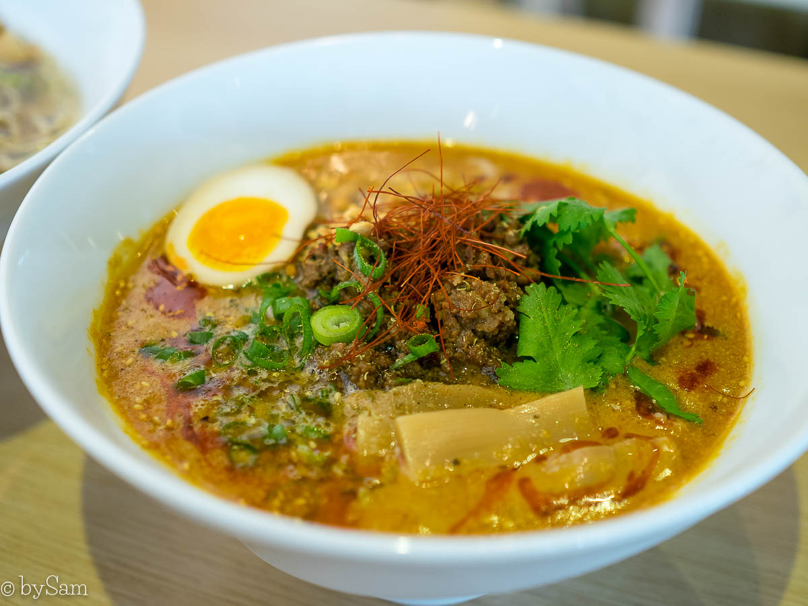
| 営業時間 | 月〜木 12:00〜22:00／金土 12:00〜22:30／日 12:00〜21:30（Google掲載情報） |
|---|---|
| 定休日 | 未確認（Google上は無休。検索スニペットでは火曜の記載なし） |
| 住所 | Schiedamsedijk 1, 3011 EB Rotterdam |
| 予約 | 不要 — ☎ +31 10 844 9140 |
| 乳児連れ | ベビーカー: 未確認 ／ ハイチェア: 未確認 ／ おむつ替え台: 未確認 |
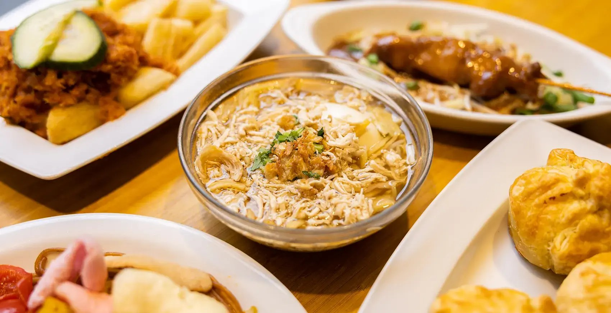
| 営業時間 | 月〜土 12:00〜22:00／日 14:00〜22:00（持ち帰り Mini53 は月〜土 11:00〜） |
|---|---|
| 定休日 | なし |
| 住所 | Witte de Withstraat 47, 3012 BM Rotterdam |
| 予約 | 不可（カウンター注文制） — ☎ +31 10 404 7456 ／ 公式サイト |
| 乳児連れ | ベビーカー: 未確認 ／ ハイチェア: 未確認 ／ おむつ替え台: 未確認 |
| 営業時間 | 火〜日 12:00〜22:00 |
|---|---|
| 定休日 | 月 |
| 住所 | Plaszoom 500, 3062 CL Rotterdam |
| 予約 | 推奨 — ☎ +31 10 212 1099 ／ 公式サイト ／ 予約サイト |
| 乳児連れ | ベビーカー: 未確認 ／ ハイチェア: 未確認 ／ おむつ替え台: 未確認 |
| 営業時間 | 月〜木・土日 11:30〜20:00 |
|---|---|
| 定休日 | 金 |
| 住所 | 1e Middellandstraat 11, 3014 BA Rotterdam |
| 予約 | 不要 — ☎ +31 10 413 1952 ／ 公式サイト |
| 乳児連れ | ベビーカー: 未確認 ／ ハイチェア: 未確認 ／ おむつ替え台: 未確認 |
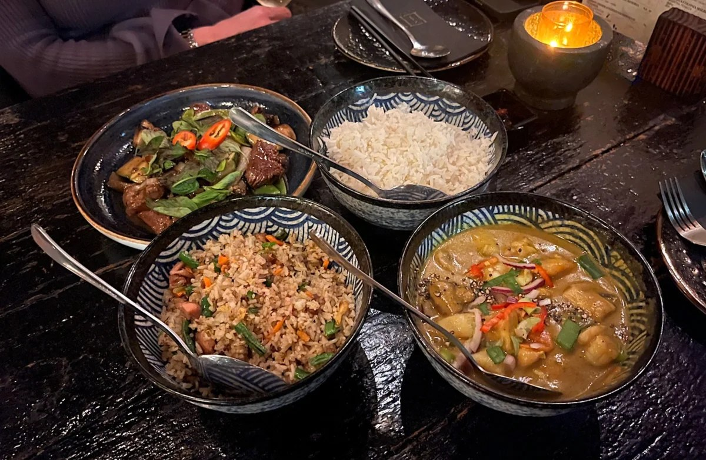
| 営業時間 | 火〜木 12:00〜22:30／金土 12:00〜23:00／日 12:00〜22:00 |
|---|---|
| 定休日 | 月 |
| 住所 | Grotekerkplein 109, 3011 GC Rotterdam |
| 予約 | 推奨 — ☎ +31 85 087 9981 ／ 公式サイト |
| 乳児連れ | ベビーカー: 未確認 ／ ハイチェア: 未確認 ／ おむつ替え台: 未確認 |
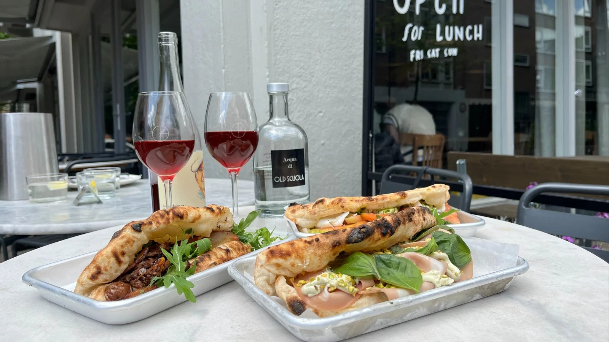
| 営業時間 | 月〜木・日 17:30〜22:00／金土 17:30〜23:00（Google 上は金曜17:00〜。2024年時点で金〜日はランチ営業あり、要確認） |
|---|---|
| 定休日 | なし |
| 住所 | Achterklooster 1, 3011 RA Rotterdam |
| 予約 | 推奨 — ☎ +31 10 318 0144 ／ 公式サイト |
| 乳児連れ | ベビーカー: 未確認 ／ ハイチェア: 未確認 ／ おむつ替え台: 未確認 |
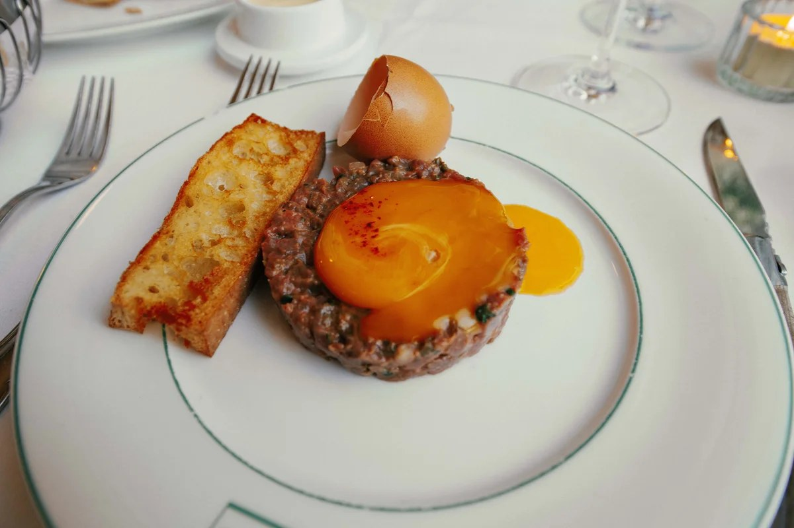
| 営業時間 | 水〜金 17:30〜23:00／土日 12:00〜23:00 |
|---|---|
| 定休日 | 月・火 |
| 住所 | Sumatraweg 5-B, 3072 ZP Rotterdam |
| 予約 | 推奨 — ☎ +31 10 846 4859 ／ 公式サイト |
| 乳児連れ | ベビーカー: 未確認 ／ ハイチェア: 未確認 ／ おむつ替え台: 未確認 |
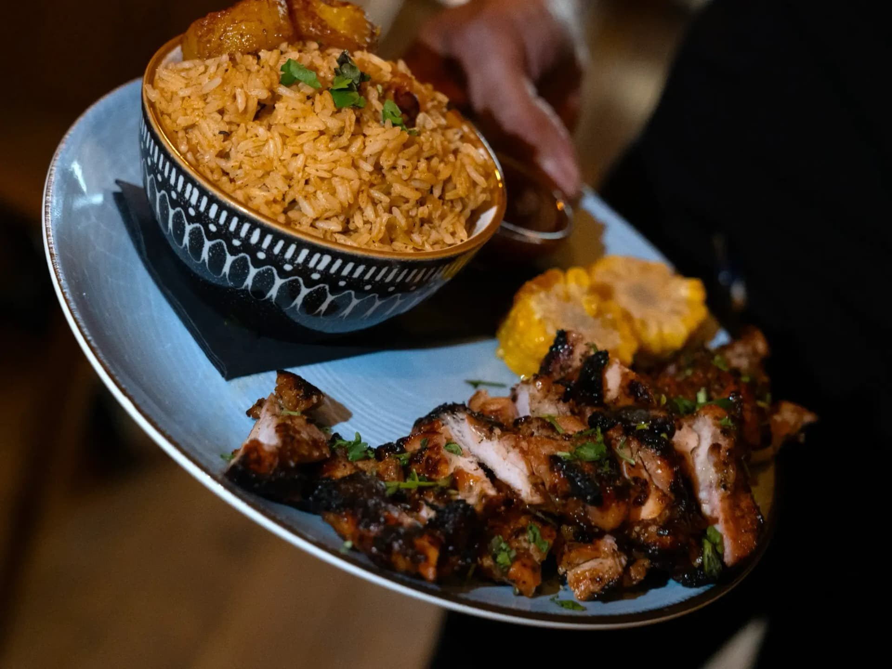
| 営業時間 | Google掲載: 水〜日 16:00〜21:30（De Buik 掲載は火〜金 16:30〜22:00・土日 14:00〜22:00。要確認） |
|---|---|
| 定休日 | 月・火（De Buik では月のみ） |
| 住所 | Nieuwe Binnenweg 285A, 3021 GG Rotterdam |
| 予約 | 推奨 — ☎ +31 10 795 5111 ／ 公式サイト |
| 乳児連れ | ベビーカー: 未確認 ／ ハイチェア: 未確認 ／ おむつ替え台: 未確認 |
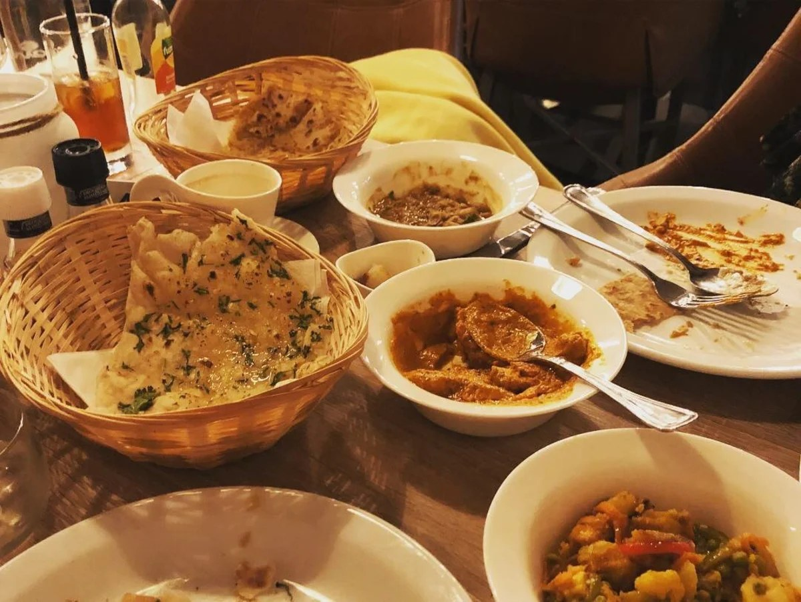
| 営業時間 | 月〜木 17:00〜21:30／金土 12:00〜22:00／日 12:00〜21:30（Google掲載） |
|---|---|
| 定休日 | なし |
| 住所 | Vasteland 5a, 3011 BJ Rotterdam |
| 予約 | 推奨 — ☎ +31 85 060 6009 ／ 公式サイト |
| 乳児連れ | ベビーカー: 未確認（公式FAQに「ロッテルダム店は完全に車椅子対応」とあり） ／ ハイチェア: 未確認（公式に「Kids friendly」「子ども向けメニューあり」と記載） ／ おむつ替え台: 未確認 (出典) |
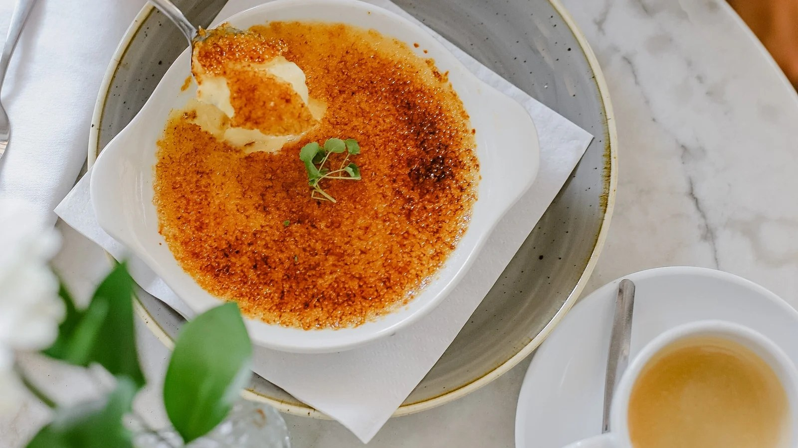
| 営業時間 | 毎日 11:00〜深夜（De Buik 掲載。公式メニューに朝食あり、朝の開店時刻は要確認） |
|---|---|
| 定休日 | なし |
| 住所 | Pannekoekstraat 38A, 3011 LH Rotterdam |
| 予約 | 可 — ☎ +31 10 842 3757 ／ 公式サイト |
| 乳児連れ | ベビーカー: 未確認 ／ ハイチェア: 未確認 ／ おむつ替え台: 未確認 |
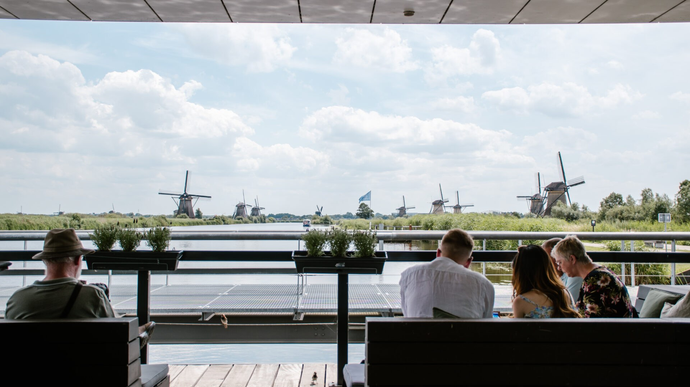
| 営業時間 | 2026年: 3/6〜11/1 毎日 9:00〜17:30／11/2〜12月末 10:30〜16:00（訪問者センターの開館時間。カフェもこれに準じる）。1〜2月は VVV 情報で金〜日 10:30〜16:00。日の出・日の入りの時間帯は閉まっている |
|---|---|
| 定休日 | 12/25。冬季（1〜2月）は月〜木休の年あり |
| 住所 | Nederwaard 1b, 2961 AS Kinderdijk |
| 予約 | 不要 — 公式サイト |
| 乳児連れ | ベビーカー: 未確認（公式FAQで訪問者センターは車椅子で利用可・車椅子貸出ありと明記。ベビーカーの個別記載なし） ／ ハイチェア: あり ／ おむつ替え台: あり (出典) |
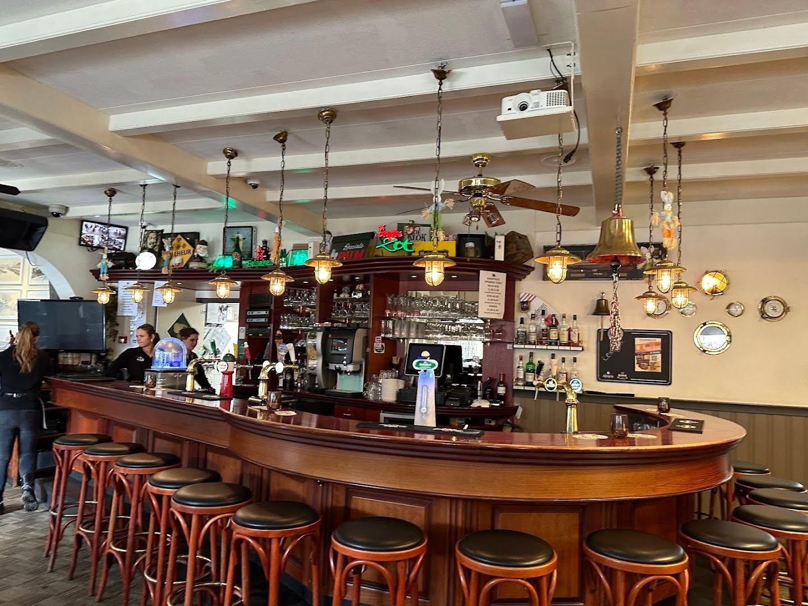
| 営業時間 | 月〜水・日 11:00〜21:00／木〜土 11:00〜02:00（公式サイト『標準営業時間』。12/25休、12/26は15:00〜、大晦日11:00〜20:00） |
|---|---|
| 定休日 | 無休（12/25・1/1休） |
| 住所 | Molenstraat 117, 2961 AK Kinderdijk |
| 予約 | 可 — ☎ +31 78 691 2597 ／ 公式サイト ／ 予約サイト |
| 乳児連れ | ベビーカー: 未確認 ／ ハイチェア: 未確認 ／ おむつ替え台: 未確認 |
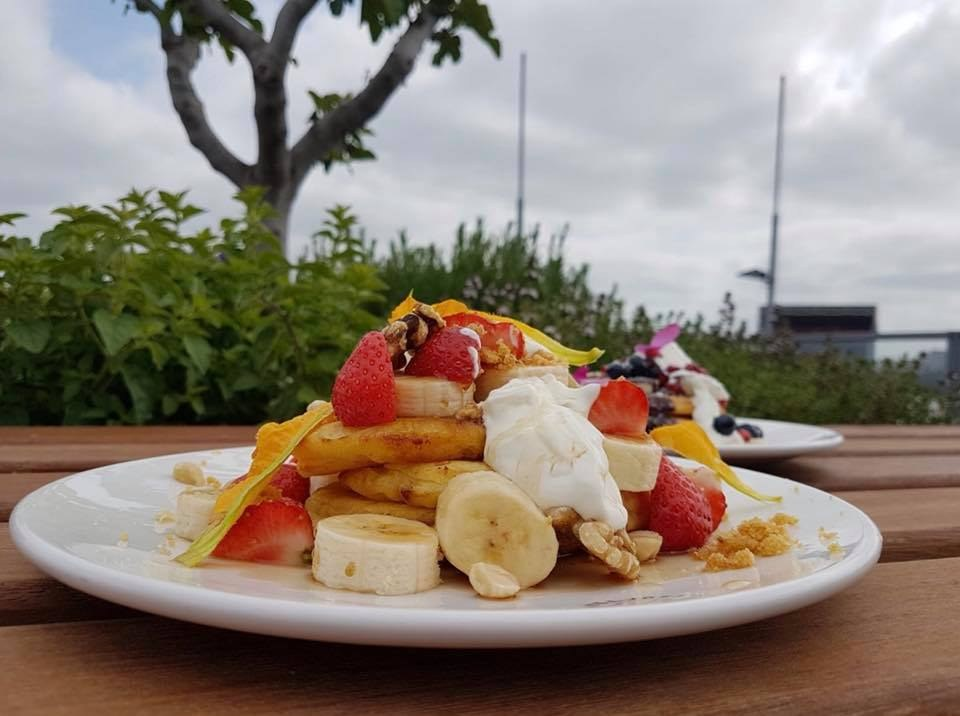
| 営業時間 | 火〜木 10:30〜21:00／金・土 10:00〜22:00／日 10:00〜21:00（キッチンは閉店30分前まで。朝食は火〜日の開店〜12:00）※公式コンタクトページより。祝日は変更あり |
|---|---|
| 定休日 | 月曜 |
| 住所 | De Schans 2, 2983 GT Ridderkerk |
| 予約 | 推奨（店内のみ。テラスは予約不可） — ☎ +31 85 064 5777 ／ 公式サイト ／ 予約サイト |
| 乳児連れ | ベビーカー: 未確認 ／ ハイチェア: 未確認 ／ おむつ替え台: 未確認 (出典) |
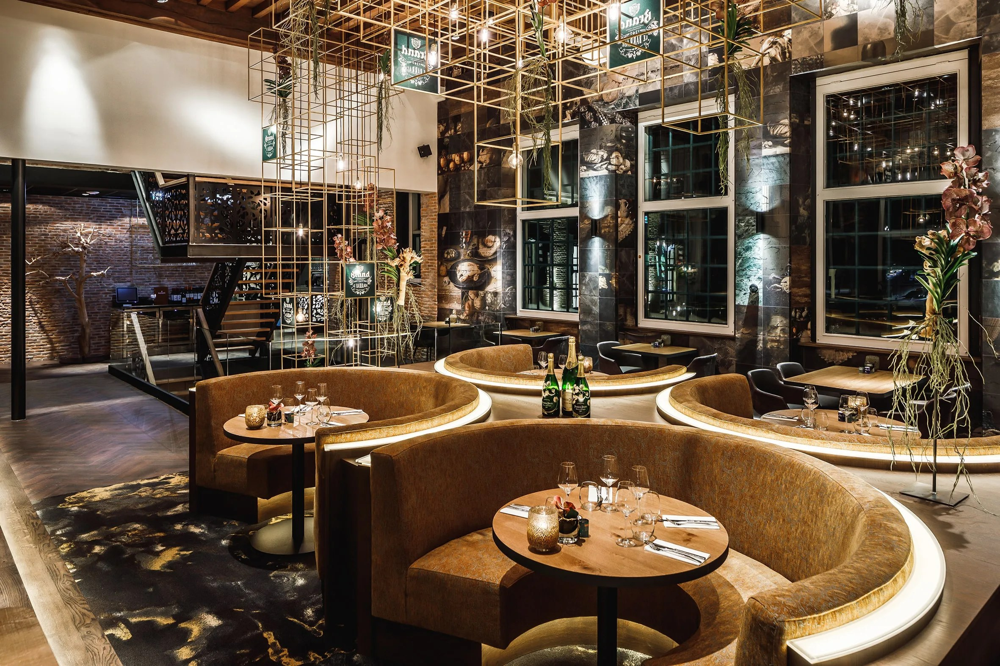
| 営業時間 | 毎日 12:00〜（キッチンは22:00まで、閉店は日により最終24:00） |
|---|---|
| 定休日 | 無休 |
| 住所 | Dam 65, 2951 GA Alblasserdam |
| 予約 | 推奨 — ☎ +31 78 740 0015 ／ 公式サイト ／ 予約サイト |
| 乳児連れ | ベビーカー: 未確認 ／ ハイチェア: 未確認 ／ おむつ替え台: 未確認 (出典) |
| 営業時間 | 月〜土 7:30〜16:00／日 9:00〜12:00（Google 掲載時間を Wanderlog で確認。公式サイトは認証画面で読めず未確認） |
|---|---|
| 定休日 | 無休（日曜は午前のみ） |
| 住所 | Grotekerksbuurt 53, 3311 CA Dordrecht |
| 予約 | 不要 — ☎ +31 78 737 0377 ／ 公式サイト |
| 乳児連れ | ベビーカー: 未確認 ／ ハイチェア: 未確認 ／ おむつ替え台: 未確認 (出典) |
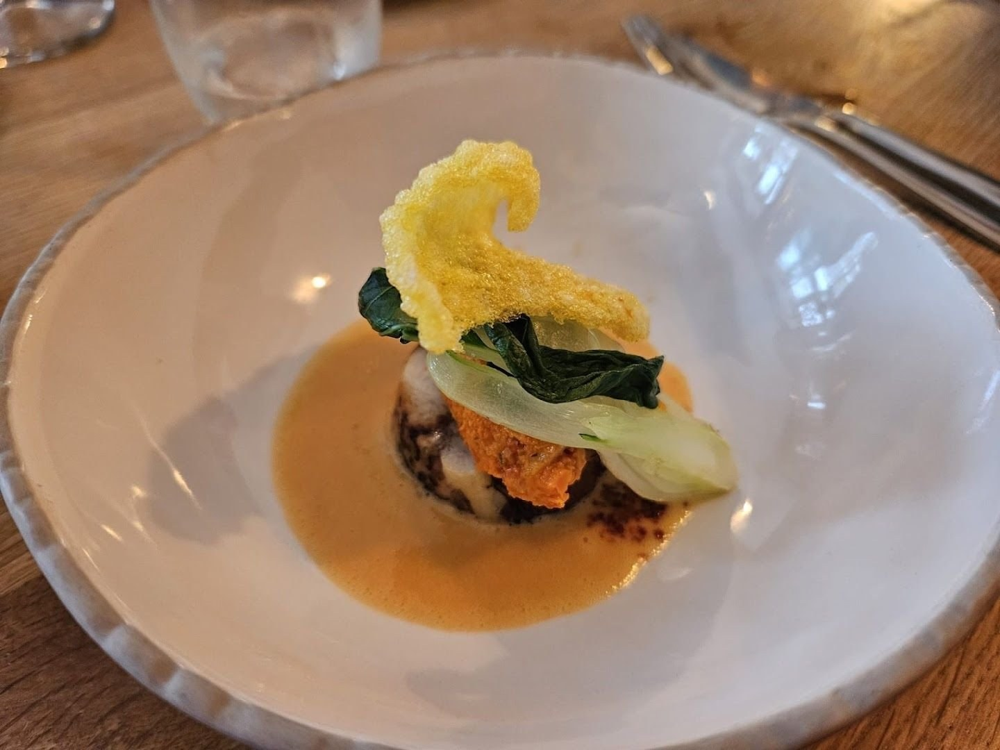
| 営業時間 | ランチ 木〜日 12:00〜14:00／ディナー 水〜日 17:30〜22:00（公式サイト） |
|---|---|
| 定休日 | 月・火（ランチは水曜も休み） |
| 住所 | Wijnbrug 1, 3311 EV Dordrecht |
| 予約 | 推奨 — ☎ +31 78 613 0094 ／ 公式サイト |
| 乳児連れ | ベビーカー: 未確認 ／ ハイチェア: 未確認 ／ おむつ替え台: 未確認 |
本ガイドは個人利用目的で作成。掲載情報は2026年9月時点の調査に基づく。写真出典: 各店の公式サイト・公式SNS、観光局、ローカルメディア・在住者ブログ等の掲載写真（著作権は各サイト・各撮影者に帰属）。引用元は店ごとにカード内へ明記。